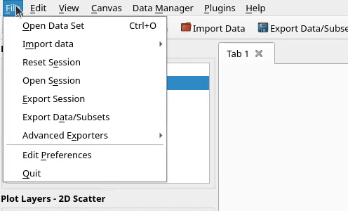

glue-plotly is a plugin for the glue visualization software which connections glue to Plotly. This consists of three main pieces of functionality:
Standalone HTML Exporters
Export glue viewers directly to interactive Plotly HTML pages. Exported HTML is completely standalone and can be used with any static file hosting service, to allow easily sharing interactive figures with your audience.
Two experimental Plotly-powered viewers which can be used with glue-jupyter: a scatter viewer and a histogram viewer. See the examples below for guidance on how to use these in your project.
Quickstart
glue-plotly is installable via pip via the command below. Once installed, see the following sections for information on how to access the exporters and viewers.
pip install glue-plotly
For developers, you can find the source code on our GitHub repository.
HTML Exporters
The HTML exporters are exposed as viewer tools in both the Qt and Jupyter versions of glue.
For Qt glue, the exporters are located in the "save" tool menu:
The Jupyter glue viewers don't yet support subtools, so the Plotly exporters are top-level tools in the toolbar:
Supported viewers
HTML export is supported for a variety of glue viewers:
All built-in viewers in Qt glue: scatter, histogram, profile, image, dendrogram, and table
Several of the glue-jupyter bqplot viewers: scatter, image, profile, and histogram
Examples
The examples below are all interactive Plotly graphs that were exported directly from glue! Each graph is labeled with the glue viewer that it was exported from.
2D Scatter
Histogram
Image
3D Scatter
Profile
Dendrogram
Chart Studio Exporter
The Chart Studio exporter allows exporting a Qt glue session to Chart Studio, provided that all of the viewers in the session are supported. Currently, we support the following Qt viewers: scatter, histogram, profile, and dendrogram.
To access the exporter in Qt glue, navigate to File > Advanced Exporters > Plotly:

Watch a video demonstrating the Chart Studio exporter in action:
Viewers
glue-plotly contains two experimental Plotly-powered viewers for use with glue-jupyter: a scatter viewer and a histogram viewer. If you're working with integral data, we also provide the ability to visualize histograms as dotplots.
For examples of using these, see this notebook, which demonstrates necessary imports, viewer creation, and manipulating viewer options.